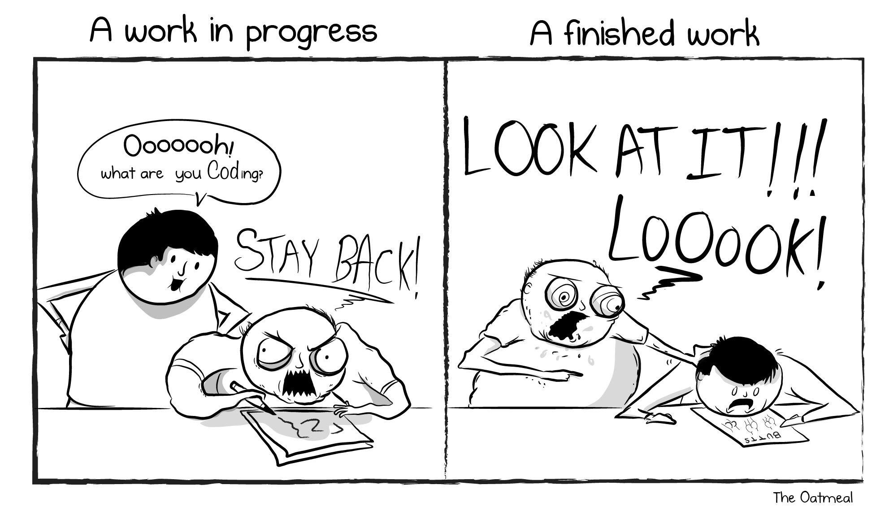

Introduction
I want to do something, not learn how to do everything.
John Carroll, “Minimal manual”
Many people think of R as a statistics system. I prefer to consider it an environment within which statistical techniques are implemented. R can be extended (easily) via packages allowing to execute various statistical and graphical techniques, including linear and nonlinear modeling, classical statistical tests, spatial and time-series analysis, classification, clustering, and others.
If this is your first time coding, R may be slow and tedious at the beginning. You will pass a lot of your time trying to understand why R is giving you an error instead of the solution to your problem. Stack Overflow and the R Help will become your best friends. The software is going to seem to judge your mistakes harshly. You will read the word “syntax error” a lot. And you will probably grow a kind of hate for the creature that lives inside the computer and that does not like you. You will think the creature is value judging your code. You will crash the laptop and loose all your data… Ok, ok! I’m a bit exaggerating… I don’t want to scare you too much, but yes, this is the worst case scenario and many of your colleagues already passed through that, and survived!

The fact is that, R is a language and, as such, should be practiced as much as possible in order to learn it. But R is “only” a coding language, so you will not be not able to speak Rish with your friends (fortunately!) nor write a letter to your pals. The only option you have is to practice it with your computer (also in group if you prefer). All the syntax errors you will get do not mean that R thinks you’re bad. It is not a judgment of your ability as a statistician. Syntax errors mean R is lost and doesn’t have better words to tell you that. Beside the fact that it can allow you to do marvelous things, R understands only when you talk to him in his language. So, my suggestion when you get an error is:
Read out loud the error and try to make sense of where the problem is (usually R suggest you that).
Check carefully your code, there may be a missing comma or a misspelled capital letter.
Copy paste the error on google and look for answers. This works more than what you may think.
The above steps almost always work, but in general I want you to never loose your effort. You will figure it out, be sure about it. You only need to build some experience first. It is like when you learn to ride a bicycle, at the beginning you have to fall a lot, but in the end you will love cycling and you will never want to get off your bike.
As a final wish for you: during my first contact with R, I was “lost”, “lost”, “lost”, “lost”, “lost”, “oh wow, I love this!”. And I hope that all of you will go through that exact same feeling.
So, please, have fun, be curious, and exercise a lot!
This manual is composed by two main sections divided in chapters. The first section will introduce the reader to the basic characteristics of the software required, its installation and configuration, it will then have a linguistic focus, so it aims at teaching how to use R in order to visualize, explore, understand, manipulate and create data. It will do so in a progressive way, starting from simple computations and ending with complex data manipulation and plotting. The second section, instead, will be all about applied statistics, from exploratory analysis, to the introduction of hypothesis testing and its implications, to bivariate and multivariate analysis methods, such as principal component analysis and classification and regression trees.